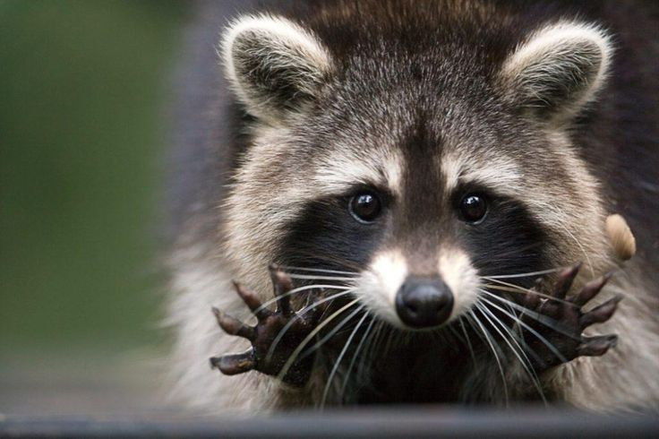
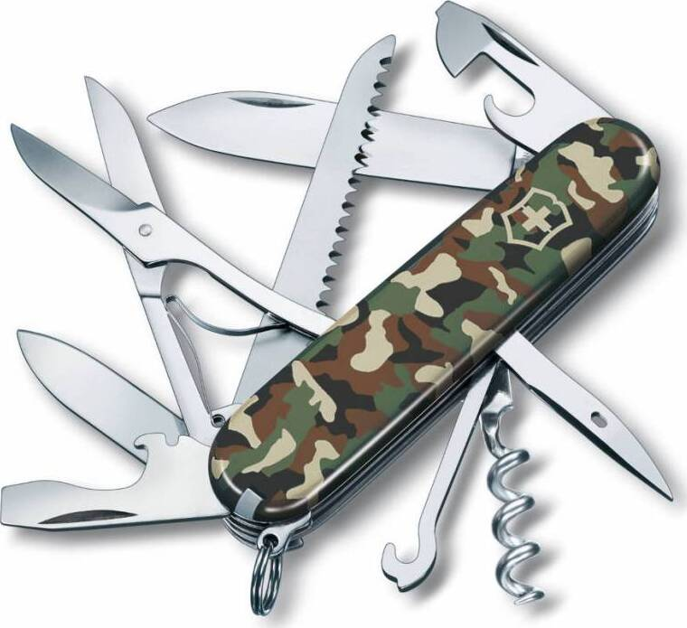
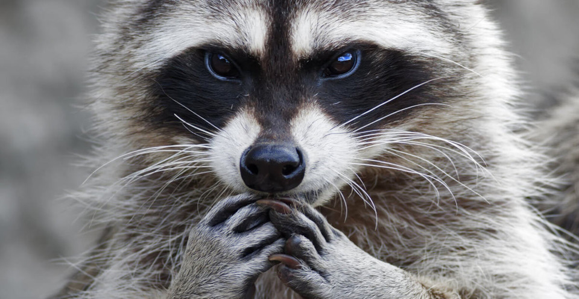
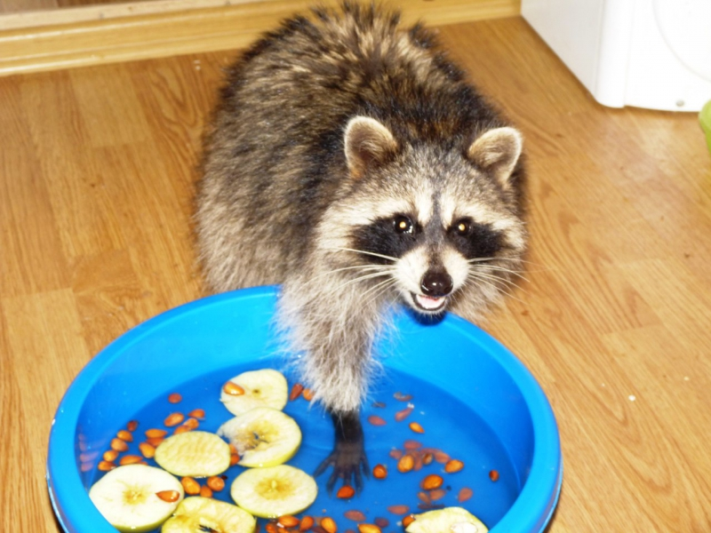

5 Смешных фактов
P.s Я не нашла то, что можно было назвать смешными фактами. Почему я не нашла? Вариантов 2, либо у меня всё плохо с юмором, либо я пещерный человек
Есть третий вариант, это первые два варианта вместе. Поэтому у меня будут 5 фактов про енотов. Надеюсь они подойдут
- Еноты – мастера перевоплощений... в ниндзя-воров!
Они могут проникнуть практически куда угодно, что делает их настоящими королями мусорных баков и кухонь, оставленных без присмотра.
"Ой, да это же просто милый зверек!" – думаете вы, пока он опустошает ваш холодильник

- Их лапки – это швейцарские ножики. Ну, почти.
У них невероятно чувствительные пальцы, благодаря которым они могут ощупывать и исследовать предметы даже под водой,
что делает их экспертами в поиске съестного в мутных водоемах.
Представьте себе слепого человека, который видит пальцами, но вместо чтения книг он ищет объедки.
- У енотов IQ как у пятилетних детей... или очень хитрых мошенников?
Их умственные способности позволяют им решать сложные задачи (например, открывать сложные замки),
но иногда кажется, что они просто притворяются глупыми, чтобы выманить у вас еду. "Ну, кто тут самый милый и голодный? Я!" хитро подмигивает
- Они моют свою еду... или просто трогают ее?

До сих пор ведутся споры о том, почему еноты так часто "моют" свою еду.
Может, они просто брезгливые, а может, они так лучше ощущают ее текстуру.
В любом случае, это выглядит так, будто они проводят священный ритуал перед тем, как умять ваш недоеденный бургер.
- Их маска – это не просто украшение.
Ученые считают, что темная маска вокруг глаз помогает им лучше видеть в темноте, уменьшая блики.
Получается, они – супергерои ночной смены, только вместо спасения мира они спасают недоеденные пиццы.